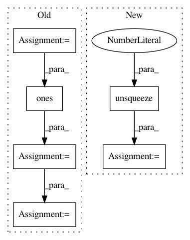

7c3d0a5ea7405fe74cc31f5553f7c04d9804d42e,pytorch/pytorchcv/models/isqrtcovresnet.py,Covpool,forward,#Any#Any#,21
Before Change
x = input
batch_size = x.data.shape[0]
channels = x.data.shape[1]
h = x.data.shape[2]
w = x.data.shape[3]
M = h * w
x = x.reshape(batch_size, channels, M)
I_hat = (-1. / M / M) * torch.ones(M, M, device=x.device) + (1. / M) * torch.eye(M, M, device=x.device)
I_hat = I_hat.view(1, M, M).repeat(batch_size, 1, 1).type(x.dtype)
y = x.bmm(I_hat).bmm(x.transpose(1, 2))
ctx.save_for_backward(input, I_hat)
return y
After Change
batch, channels, height, width = x.size()
n = height * width
xn = x.reshape(batch, channels, n)
identity_bar = ((1.0 / n) * torch.eye(n, dtype=xn.dtype, device=xn.device)).unsqueeze(dim=0).repeat(batch, 1, 1)
ones_bar = torch.full((batch, n, n), fill_value=(-1.0 / n / n), dtype=xn.dtype, device=xn.device)
i_bar = identity_bar + ones_bar
sigma = xn.bmm(i_bar).bmm(xn.transpose(1, 2))
ctx.save_for_backward(x, i_bar)
In pattern: SUPERPATTERN
Frequency: 3
Non-data size: 6
Instances
Project Name: osmr/imgclsmob
Commit Name: 7c3d0a5ea7405fe74cc31f5553f7c04d9804d42e
Time: 2019-03-02
Author: osemery@gmail.com
File Name: pytorch/pytorchcv/models/isqrtcovresnet.py
Class Name: Covpool
Method Name: forward
Project Name: jadore801120/attention-is-all-you-need-pytorch
Commit Name: bed0a0ae26451c9897cf1ee0f7302e42eba9b42c
Time: 2018-08-23
Author: yhhuang@nlg.csie.ntu.edu.tw
File Name: transformer/Models.py
Class Name:
Method Name: get_attn_subsequent_mask
Project Name: allenai/allennlp
Commit Name: e2f66c0de2600308044ec3ab7731dae9017378fa
Time: 2018-12-20
Author: vidurj@allenai.org
File Name: allennlp/modules/seq2seq_encoders/bidirectional_language_model_transformer.py
Class Name:
Method Name: subsequent_mask